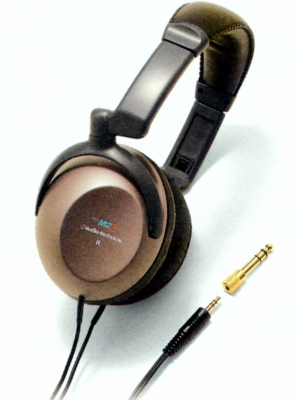

ATH-M2Z

■価格 3,800円■型式 ダイナミック型密閉タイプ■振動板 40�o 25ミクロン厚■インピーダンス 32Ω■再生周波数帯域 20-22,000Hz■許容入力 1,000mW■感度 102ｄB/mW■コード 3.5ｍOFC ステレオ3.5/6.3mmプラグ■重量 190g（コード含まず）■発売 2000年頃■販売終了■備考 2000年10月版カタログに記載の機種5mコードのATH-M2TV(4,500円)あり
テクニカのインデックスへ